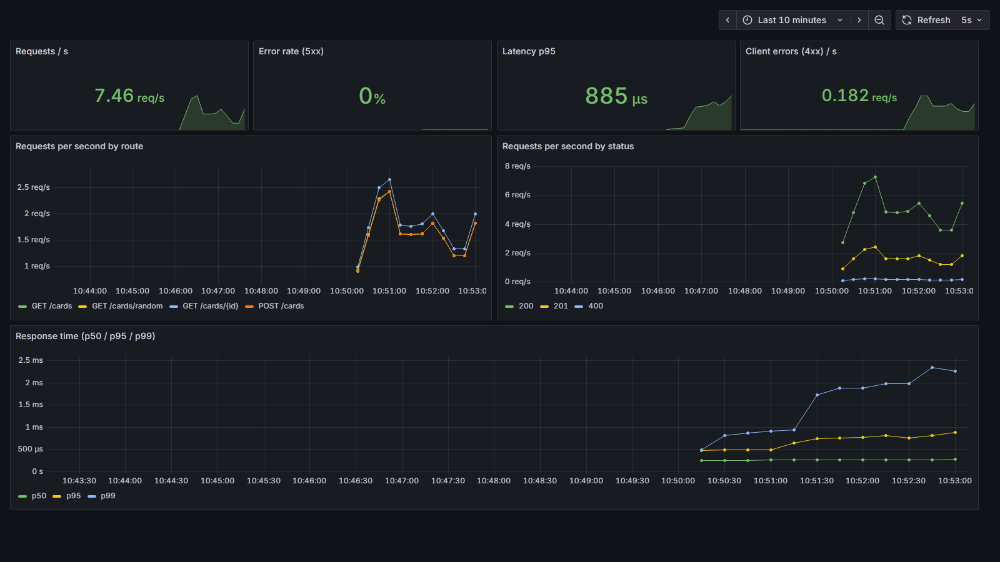
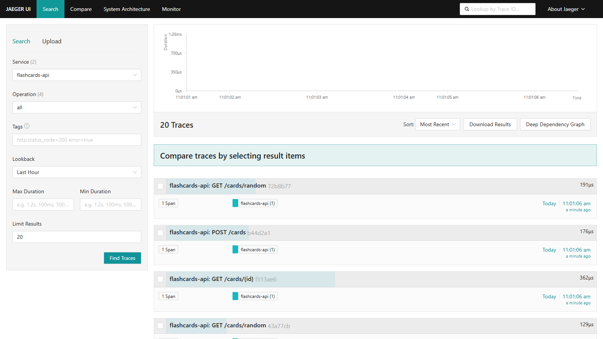

Une petite API, toute la chaîne DevOps :
code, CI/CD, Docker, Kubernetes, observabilité, sécurité.
Mouhib Fahem · github.com/mouhibfahem/devops
| Route | Rôle |
|---|---|
GET /cards | Lister (filtre ?topic=) |
POST /cards | Créer une carte |
GET /cards/{id} | Consulter |
DELETE /cards/{id} | Supprimer |
GET /cards/random | Mode quiz : question sans réponse |
GET /health | Santé (sondes Kubernetes) |
$ curl /cards/random
{"id":2,
"topic":"sre",
"question":"What is an SLO?"}
feature/5-metricsCloses #5), fusionnée seulement si le pipeline est vertmain après l'initialisation# 1. Compilation FROM golang:1.27.2-alpine AS build RUN CGO_ENABLED=0 go build -o /out/api . # 2. Exécution : seulement le binaire FROM gcr.io/distroless/static-debian12 COPY --from=build /out/api /api USER 65532:65532 ENTRYPOINT ["/api"]
runAsNonRoot/health : readiness (prêt à recevoir du trafic ?) et liveness (encore vivant ?)$ kubectl delete pod flashcards-api-…h86ff pod deleted $ kubectl get pods flashcards-api-…2gpnf Running 6s flashcards-api-…s88sj Running 28s
Une ligne par requête : route, statut, durée, request_id, trace_id. Le niveau suit le statut : INFO, WARN, ERROR.
/metrics : nombre de requêtes, histogramme des temps de réponse, requêtes en cours, par route.
p95 = SLI. Un SLO possible : 95 % des requêtes en moins de 200 ms.

traceparent entrant poursuivitrace_id du log ouvre la trace dans JaegerLogs = quoi · Métriques = combien, à quelle vitesse · Traces = par où

| Problème | Outil | Correction |
|---|---|---|
11 vulnérabilités connues dans Go 1.27.0 et x/net | govulncheck | Go 1.27.2, x/net 0.60.0 |
| Injection dans les logs (G706) | gosec | Log structuré slog |
| 2 en-têtes de sécurité manquants | OWASP ZAP | En-têtes ajoutés → alertes disparues |
| Secrets dans l'historique Git | gitleaks | Aucun trouvé |
| Failles HIGH/CRITICAL dans l'image | Trivy | 0 |
SAST : lit le code sans l'exécuter · DAST : attaque l'API déployée dans Kubernetes, comme un pirate
docker compose up -d --build ./scripts/load.sh http://localhost:8080 200 # Grafana → http://localhost:3000 # Jaeger → http://localhost:16686 # Prometheus → http://localhost:9090
kubectl apply -k k8s/ kubectl -n flashcards get pods kubectl -n flashcards port-forward \ svc/flashcards-api 8080:80 curl localhost:8080/cards/random kubectl -n flashcards delete pod <pod>
Et sur GitHub : un pipeline vert, l'onglet Security (gosec), les artefacts ZAP et Trivy.
runAsNonRoot exige un UID numériquegithub.com/mouhibfahem/devops
hub.docker.com/r/mouhibfahem/flashcards-api